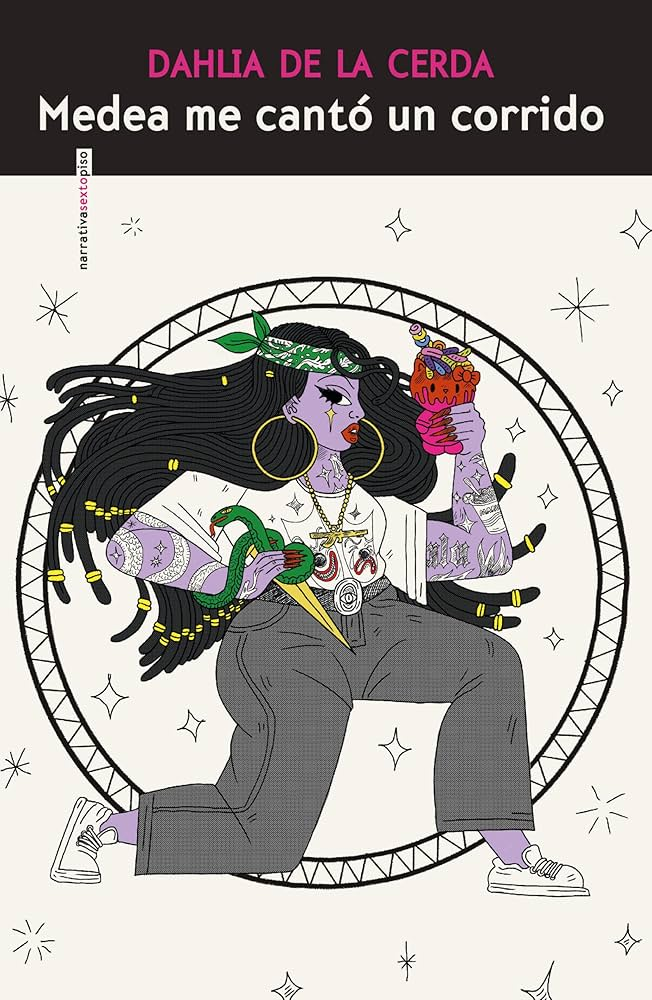
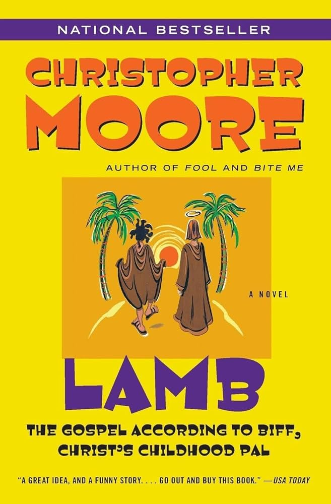
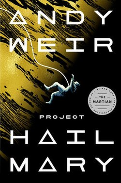
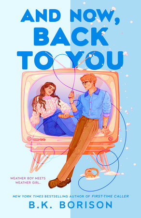
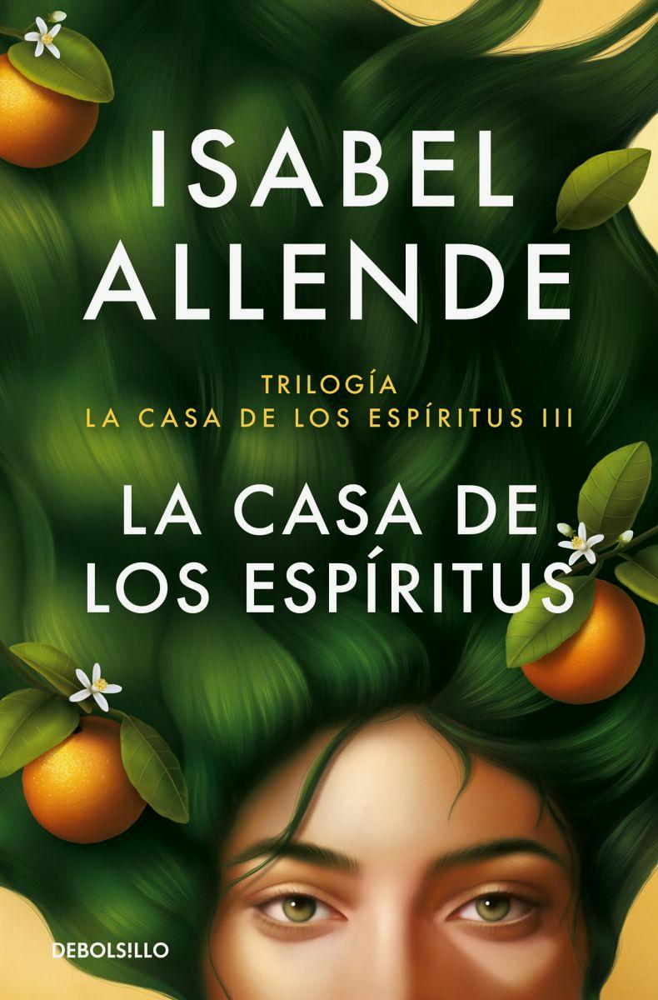
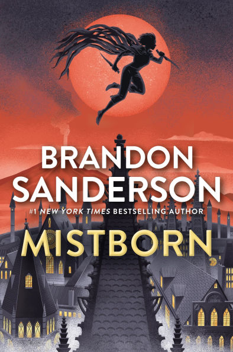
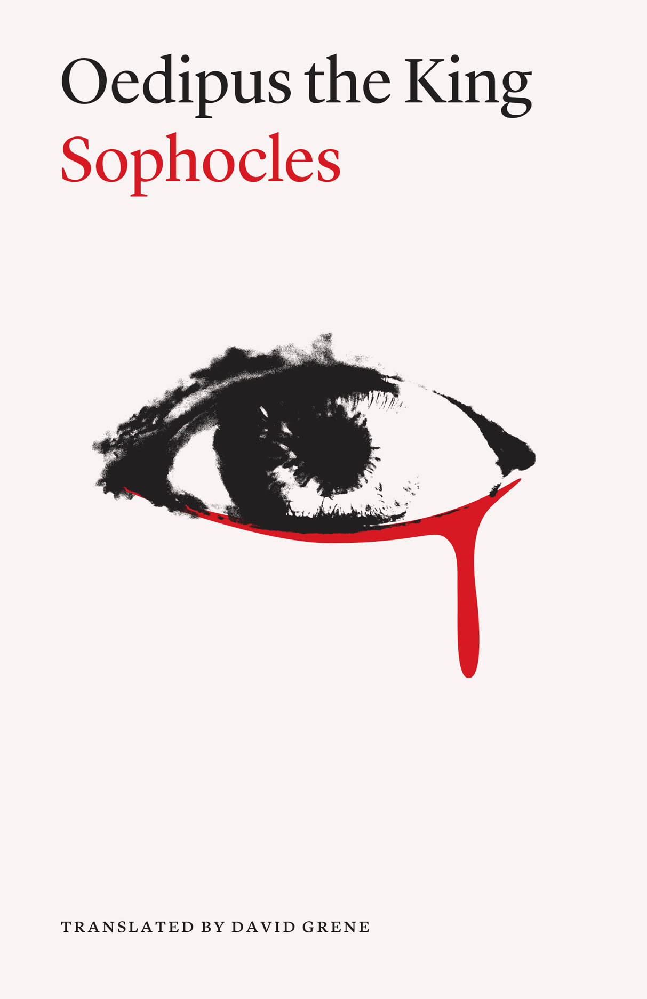
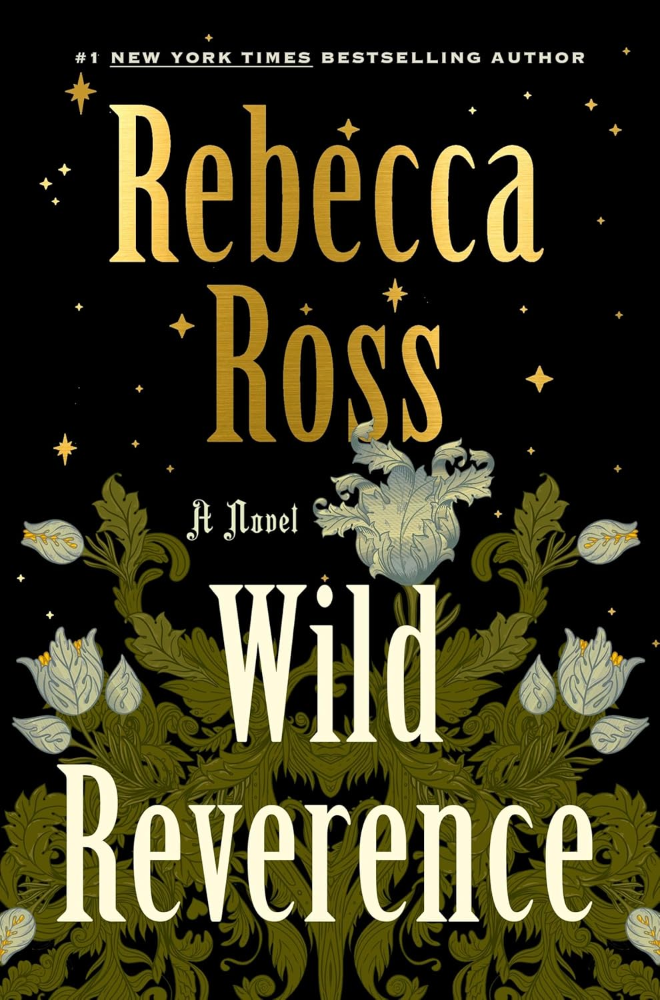

2026
Reflection
21 / 26 books
-5 books under goal
5 Star Reads
These are my five star reads of the year. Reviews may contain spoilers, so proceed with caution. If you want the full list of everything I’ve read, you can find me on Goodreads.

Medea me cantó un corrido
\
Lamb: The Gospel According to Biff, Christ's Childhood Pal
I have been putting off reading this book for years. Like actual years. And now that I’ve finally read it, I genuinely don’t know why I waited so long.
This book is absurdly funny in a way that caught me off guard. Not just clever or witty, but laugh out loud, pause reading because you can’t get through the sentence kind of funny. But what surprised me even more is how beautiful it is underneath all of that humor. It’s one of those rare books that manages to be irreverent and deeply respectful at the same time. It plays with something sacred without feeling like it’s mocking it, which is a very hard balance to strike, and somehow it works.
The premise itself is already bold: telling the story of Jesus Christ’s missing years through the perspective of his best friend Biff. But what makes it land is not the premise, it’s the voice. Biff is such a compelling narrator because he feels so human. Messy, impulsive, loyal, selfish, loving. He is constantly questioning, constantly pushing, constantly grounding Josh in a reality that feels tangible. And in contrast, Josh is written with this quiet steadiness that never feels flat. There is something really tender about watching their friendship develop across time, especially knowing where the story is inevitably going.
What I loved most is that the book is not just a parody or a satire. It is a story about friendship, faith, doubt, and the search for meaning. It asks real questions. What does it mean to be good? What does it mean to love people who are flawed? What does it mean to believe in something when you don’t fully understand it? And it does all of this while also making jokes about kung fu, yetis, and sex. It should not work, but it absolutely does.
There is also something really interesting about the way the book humanizes Josh. He is not distant or untouchable. He is learning, struggling, figuring things out. And because we see him through Biff’s eyes, there is this added layer of affection and frustration and awe that makes him feel more real. Their dynamic is the heart of the book, and it is what gives all of the humor and adventure actual emotional weight.
My main complaint comes at the very end. The relationship between Biff and Josh was such a beautiful, central part of the story that I found myself really wanting some kind of reunion or closure between them. Biff’s choice to end his life is heartbreaking, and I do think it makes sense within the framework of the story and his character. It feels consistent with his loyalty, with his love, and with the life he has lived.
But at the same time, I couldn’t help but feel a little empty without a final moment between them. Even something small. Even something symbolic. After everything they went through together, I wanted to see that thread tied, even loosely. The absence of that closure felt intentional, but it still left me wishing for just a little more.
This book is wildly original, deeply funny, and unexpectedly moving. It’s the kind of story that feels light while you’re reading it, but then lingers in a much heavier, more meaningful way afterward.

Project Hail Mary
I genuinely cannot overstate how much I loved this book. It completely pulled me in in a way that reminded me of something I forget sometimes, which is how much I love space. There’s something about the timing too. Between this book, the movie, and everything happening with the Artemis II mission, it kind of reignited that sense of wonder for me.
And maybe part of that love comes with frustration. Because space, at its best, feels like this shared human endeavor. Something expansive and collective and hopeful. And then there’s the reality of certain idiots trying to privatize it while actively making things worse down here. But that tension actually made this book hit even harder, because it leans fully into what space exploration could represent at its best.
On the surface, Project Hail Mary is a book about space. It has all the things you’d expect. Science, problem solving, survival, the slow unraveling of a mystery. But at its core, this is a book about humanity. About what we are willing to do for each other. About the limits we think we have, and what happens when we’re pushed beyond them.
What really makes the book special is how it balances that scale. You have this massive, species level crisis, something that threatens all life on Earth. But the story never loses sight of the individual. The choices come down to people. Messy, imperfect, very human people making decisions under impossible circumstances.
And obviously, at the heart of it all, is the relationship between Ryland Grace and Rocky. I don’t even know how to explain how much I loved this dynamic without sounding dramatic, but it genuinely made the book for me. It’s funny and unexpected and somehow incredibly emotional. Watching two completely different beings learn to communicate, trust each other, and ultimately care for each other in such a deep way was one of the most compelling parts of the story.
There’s this idea that runs through the book that it’s easier to sacrifice yourself for a person than for an abstract cause. And I think that’s what makes Grace’s journey feel so real. He’s not some perfect, selfless hero from the start. In fact, part of what makes him compelling is that he isn’t. His motivations are complicated. His fears are real. And yet, when it comes down to it, he shows up in the ways that matter.
I think that’s why I connected to him so much. That tension between who you want to be and who you actually are in the moment. The idea that bravery isn’t always this innate trait, but something that emerges through relationships, through connection, through responsibility to someone else.
The science in this book is also just… fun. It’s detailed enough to feel immersive and high stakes, but never so overwhelming that it takes you out of the story. It feels like you’re solving problems alongside him, which makes every success feel earned and every failure feel stressful in the best way.
But more than anything, this book made me feel hopeful. Not in a naive way, but in a grounded, human way. That even when things feel impossible, there is still something in us that reaches toward each other, that figures things out, that refuses to give up.
This one was an easy 5 stars.

And Now, Back to You
I loved this book. It’s easily my favorite contemporary romance of the year so far. I think experiencing my first major snowstorm this year honestly made it even better. It really put me in the right mood and season for the story, and everything about it just clicked.
I loved the characters so much. Jackson and Delilah were incredibly fun to follow, and they felt like such a good balance to each other. Their dynamic had that perfect mix of tension, humor, and warmth that makes a romance really work.
Also, When Harry Met Sally... is my all time favorite movie, so I was already a little biased going in. But this might be my favorite literary adaptation or homage to it that I’ve read so far. It captured that same charm and emotional payoff while still feeling like its own story.
Overall, this was just such a cozy, fun, and memorable read for me, and one I’d definitely recommend if you’re in the mood for a romantic, wintery escape.

La Casa De Los Espíritus
What struck me most about this book was how deeply it is concerned with identity, not just as something personal but as something historical. Identity in this novel is never isolated within one character. It is passed down, reshaped, resisted, and sometimes carried like a burden through generations. The story follows the Trueba family across decades, but the real subject of the book is how people become who they are when they are shaped by family, politics, memory, and place.
One of the most powerful elements of the novel is the way it treats memory. The narrative moves between voices, especially Clara and Alba, and their writing becomes a way of preserving identity across time. Clara’s notebooks feel almost like an act of defiance against forgetting. They preserve the small details of everyday life but also the emotional truths of the family. By the time Alba takes up the story, those records become a way of reconstructing both herself and the past. Identity in this sense is not something fixed but something that is continually rebuilt through memory and storytelling.
The book also explores identity through power and social class. Esteban Trueba spends much of the novel trying to impose his own vision of order and authority on the world around him. He defines himself through land, status, and control. Yet the story slowly reveals the fragility of that kind of identity. The people he tries to dominate, the workers on his land, the women in his family, and even the illegitimate branches of his lineage, ultimately shape the future more than he does. The novel quietly suggests that identity built on power alone cannot endure.
In contrast, the women of the novel seem to embody a different kind of identity, one rooted in connection rather than domination. Clara, Blanca, and Alba each navigate the constraints placed on them in different ways, but they all carry a certain resilience that allows them to survive the upheavals of the story. Clara’s spirituality and detachment from material concerns give her a sense of identity that cannot easily be controlled. Blanca chooses love despite the rigid social structure around her. Alba, perhaps the most important voice in the end, learns to reclaim her identity even after experiencing violence and political repression.
What makes this especially powerful is how closely the personal story of the family mirrors the political history unfolding around them. As Chile moves toward dictatorship and repression, the characters’ identities become entangled with the broader struggles of the country. The novel shows how political violence does not just reshape governments but reshapes families, relationships, and the ways people understand themselves. Alba’s survival and decision to tell the story feels like an assertion that identity can endure even after trauma.
Another aspect of the book that stayed with me is how it blends the magical and the ordinary. Clara’s supernatural abilities are never treated as something extraordinary within the world of the novel. Instead, they feel like another dimension of reality. This magical realism creates the sense that identity itself is layered. People are not only defined by what can be seen or measured. They are shaped by intuition, memory, emotion, and forces that are harder to explain.
By the end of the novel, what remains most clearly is the idea that identity is relational. The characters are constantly defining themselves through their connections to others: family members, lovers, political movements, and communities. Even Esteban, who spends much of the story trying to assert his independence and authority, ultimately finds himself defined by the very people he tried to control.
The final sections of the book feel particularly moving because they suggest that telling the story itself is an act of healing. Alba’s decision to write the history of her family becomes a way of understanding who she is and how she came to exist within this complicated legacy. Identity, the novel suggests, is not something we discover once and for all. It is something we piece together from the stories that come before us.
The House of the Spirits is ultimately a novel about survival, memory, and the ways people continue to define themselves even after history has tried to erase them. It is deeply political and deeply personal at the same time. By the end, it feels less like a single story and more like a tapestry of lives, each one shaping the next.
It is the kind of book that reminds you that who we are is never just our own creation. It is something we inherit, question, and eventually choose how to carry forward. Reading it also made me think about my own identity and culture, and the ways I have been shaped by the people and histories that came before me. Like the family in the novel, our own families are never perfect, but they are still the places where our stories begin. In that sense, the book feels like a reminder that even within all the messiness, conflict, and contradictions of family, there is still love holding everything together.

Mistborn
One of my goals this year is to reread the original Mistborn trilogy and finally start The Way of Kings. It has been over a decade since I first read Mistborn, and I had somehow forgotten just how good it is. Wow. What a story this man weaves. The characters, the plot, the structure, the reveals. It is all fantastically done.
What struck me most on reread is how tightly constructed it is. The magic system is famously precise, but the real brilliance is how the emotional arcs mirror the mechanics of Allomancy itself. Power in this world is not abstract. It is ingested, metabolized, burned. Strength comes from internal reserves. It feels symbolic of the way trauma and hope operate in the characters. They survive by consuming and transforming what has been given to them.
And then there is Kelsier. What a complicated man. I am obsessed.
On first read, he feels like a charming revolutionary hero. On reread, he feels much more dangerous. He is charismatic, strategic, theatrical. He understands that rebellion is not only about logistics but about narrative. He does not just want to overthrow the Final Empire. He wants to create belief. He consciously shapes himself into a symbol. There is something unsettling about how self aware he is in this transformation. He is not simply inspiring faith. He is manufacturing it.
Which brings me to what I find most interesting about this book now. It is not only a heist story or a rebellion fantasy. It is a novel deeply concerned with religion.
The Lord Ruler is not just a tyrant. He is a god emperor who has ruled for a thousand years. His oppression is theological as much as political. The skaa are not only enslaved physically. They are taught that their suffering is ordained. The revolution, therefore, must dismantle not only a regime but a cosmology.
Kelsier recognizes this. He understands that people need something to believe in. In a world where religion has been weaponized to enforce submission, he attempts to weaponize belief in the opposite direction. The question the novel quietly asks is whether that is liberation or simply a new form of mythmaking. Is faith inherently manipulative when it is used strategically, even for good ends?
Vin becomes the emotional counterpoint to this question. Her journey is less about political ideology and more about trust. She has been betrayed repeatedly and struggles to believe in anything at all. Watching her learn to trust in friendship, in chosen family, in something larger than survival, is as powerful as any battle scene. If Kelsier is about constructing belief on a grand scale, Vin is about learning belief on a personal one.
I also find it fascinating how the book treats power and divinity as disturbingly close. The Lord Ruler’s immortality and godhood are revealed to be the product of very human choices. Sanderson blurs the line between magic and theology in a way that makes you question what separates a god from a person with enough time and power. It turns the fantasy trope of the dark immortal ruler into something almost philosophical.
Beyond all of that, it is simply thrilling. The heist structure gives the story momentum. The twists feel earned. The reveals recontextualize what you thought you understood. And the emotional beats land hard, even when you know they are coming.
Rereading it reminded me why Sanderson is so beloved. The worldbuilding is meticulous, but it never overshadows the humanity at the center. This is a story about oppression and hope, about narrative and belief, about how revolutions are built not only with metal and magic but with myth.
I cannot wait to continue the trilogy. If this reread is any indication, I am about to fall in love with it all over again.

Oedipus Rex
One of my goals this year is to read the three Theban plays chronologically, and somehow I had never actually read Oedipus Rex. I knew the story but reading the play itself was something entirely different. It was absolutely fantastic.
What struck me most is how modern it feels. Yes, the premise is ancient and mythic: prophecy, plague, patricide, fate. However, the structure is almost psychological thriller. The tension doesn’t come from what will happen (we already know and so did the audience), but from how the truth is revealed. The play unfolds like an investigation. Oedipus is both detective and culprit, interrogating witnesses, chasing clues, assembling fragments of evidence. Completely unaware that he is slowly building a case against himself. And that’s what makes it devastating.
One of the most compelling aspects of the play is that Oedipus is not a villain. He is intelligent, decisive, committed to justice. He genuinely wants to save Thebes. In fact, his greatest virtues are what undo him. His refusal to stop digging, his demand for truth at any cost, his pride in his own rationality — these are admirable qualities. The tragedy is not that he is evil, but that he is human and bound by forces larger than his understanding.
Another insteresting element is the tension between fate and agency. Is Oedipus doomed from birth? Or does his attempt to escape the prophecy ensure its fulfillment? The play resists a simple answer. There’s something chilling about how every attempt to outrun fate propels him toward it. It makes the tragedy feel less like cosmic cruelty and more like an exploration of how fear, pride, and denial shape our choices.
And perhaps most powerful is the emotional undercurrent: the way identity itself fractures. Oedipus begins as a confident king, savior of the city, husband and father. By the end, he is untethered from every role that defined him. The horror isn’t just what he did; it’s the collapse of who he thought he was. The play becomes less about incest and patricide (the sensational parts we fixate on culturally, thanks Freud :/) and more about the terrifying instability of self-knowledge.
Reading it, I was reminded that this is not just a myth but a meditation on the limits of human understanding. On how fragile certainty is. On how easily we can mistake confidence for clarity.
Knowing the ending didn’t diminish the experience. If anything, it intensified it. Watching the inevitability unfold is the whole point. Which is how I think an Ancient Greek audience would have experienced it.
A foundational tragedy that still feels sharp, psychological, and painfully human.

Wild Reverence
This book was so beautifully written. From the very first pages, Rebecca Ross creates a world that feels tender, aching, and alive. At its heart, Wild Reverence is a love story, but it’s also a meditation on the power of love in the context of many relationships.
>The romance unfolds gently, rooted in a setting that feels almost sacred in its beauty. Nature is not just a backdrop here but a presence, something that mirrors the characters’ longing, loss, and hope. Ross’s prose is lyrical without being heavy.
What I loved most is how the book honors softness but makes the characters strong. The love feels earned, patient, and deeply human, shaped and defined by sorrow.